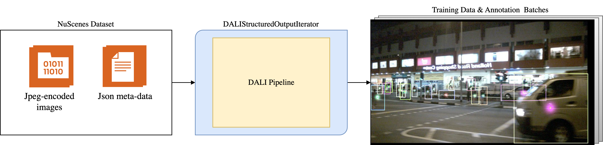

Introduction
This page provides an overview of the design of the DALI pipeline framework for the ADAS domain provided by this package.
Why DALI
The NVIDIA Data Loading Library (DALI; see DALI documentation) can be used to implement efficient GPU-accelerated data loading & pre-processing pipelines, aimed at use in Deep Learning training scenarios.
On the one hand, it provides a set of efficient operators (such as e.g. image decoding, affine & color transformations, etc.), where most of them can be run both on the CPU and the GPU. On the other hand, DALI is based on pipelines, which allow efficient utilization of both the CPU and the GPU, while avoiding the need to transfer of data between processes when passing the pipeline output to the training implementation (which would typically entail GPU to CPU transfers if any data is on the GPU). This is achieved by a design where the Python pipeline implementation is not executed directly, but instead, is used to construct a DALI graph, which then is executed in parallel to the training implementation using native threading. The individual operators can choose to utilize additional worker threads for the processing of the data or run in a single thread. This allows efficient multi-threading for the CPU operators, while allowing GPU operators to operate on whole batches of data (using a single CPU thread to orchestrate the GPU workload for the whole batch), improving the achieved utilization of the GPU.
The complexity of the data batching and threading is transparent to the user. While the pipeline processes batches of data, the Python pipeline definition can be written in a way as if a single sample is processed, simplifying the implementation. When branching is needed, DALI will automatically take care of grouping the samples for each of the branches, so that the individual operators still operate on a (reduced) batch of samples for each of the branches.
Why the ADAS DALI Pipeline Framework
While DALI enables the creation of efficient pipelines, implementing pipelines directly with DALI for complex training sample data formats, as are typically needed in the ADAS domain, is challenging. Individual samples typically represent a whole scene. Such a scene may e.g. contain 3D annotations, as well as data from multiple points in time, where for each time point, there may be ego-pose related information, as well as images from multiple cameras, each with its own projection geometry and set of 2D annotations.
This data format setup is challenging to manage in DALI, which does not support nested data formats out-of-the-box. Additionally, some non-standard or unsupported operations (e.g. string processing) may be challenging to implement in DALI.
PyTorch DALI Proxy
To mitigate this, DALI provides a PyTorch DALI proxy, which allows to perform most of the processing in the PyTorch data loader, while still using DALI for the most computationally intensive parts, leveraging the best of the two worlds. In this way, it is possible to use efficient DALI-based processing for computationally intensive parts, while keeping cheap, but often non-standard, processing steps in the PyTorch data loader. The hierarchical data format supported by the PyTorch data loader can also be preserved. While the DALI pipeline(s) still operate on a flat format, it can be inserted into the hierarchical data format supported by the PyTorch data loader.
Our Approach
In this package, we use a complimentary approach to simplify DALI pipeline implementation: We create a DALI pipeline framework, which is designed specifically for the needs of the ADAS domain, and which is designed to be modular and flexible, and enable easy definition of pipelines from scratch, using the pre-implemented processing steps.
While the PyTorch DALI proxy is a good match for fixed and/or already existing PyTorch DataLoader implementations, it is challenging to use with modular pipelines, where individual pre-implemented processing steps can be combined into a pipeline (as the results of the DALI processing are not available inside the PyTorch data loader). Therefore, we implement the whole processing pipeline in DALI. Apart from that, we make extended use of the DALI graph construction step to implement flexible processing steps which are highly adaptable to the input data without incurring a runtime cost once the graph is constructed.
We provide a helper data container (SampleDataGroup) to
manage nested data formats in DALI. We also provide a selection of pre-implemented processing steps, which
operate on the data in this format. The package furthermore contains other components needed to build a DALI
pipeline and provide the output data in a structured format.
This approach enables us to:
Make the processing steps highly flexible and adaptive to the input data. Making use of the DALI graph construction step, we can implement processing steps which e.g. dynamically search the input data for relevant entries (e.g. all images, or all data from a single camera), and process it accordingly. This avoids the need to enforce a fixed data format in each processing step. At the same time, this automation only incurs a one-time cost at pipeline construction time, not during the pipeline execution.
Utilizing the
SampleDataGroupclass in combination with theDALIStructuredOutputIteratorwrapper for the pipeline, we can provide a structured output in the exact same format that a typical PyTorch DataLoader would provide (i.e. a nested dictionary), so that the DALI pipeline can be used as a drop-in replacement, without the need to change the training implementation (except for the construction of the pipeline instead of a PyTorch DataLoader). Note that while this may be possible with the PyTorch DALI proxy, it is not supported out-of-the-box for pure DALI pipelines.Enforce a well-defined data format (as a
SampleDataGroupblueprint instance, containing the format, but not the actual data) & check the processing steps for compatibility with each other & the input data.
Overview
The dali_pipeline_framework package provides a flexible pipeline framework on top of DALI. It is designed
to simplify the creation of pipelines for typical use-cases in the AUTO domain, as well as to enable
integration into existing training implementations with as few changes as possible. Ideally, the only changes
needed are related to the creation of the pipeline, while the rest of the training implementation remains
unchanged. Please also see the Examples.
The pipeline framework is used to provide input data to the training. This task can be further broken down into the following steps:
Loading of data (typically from files)
Processing the data, including augmentations, but also e.g. decoding of images, etc.
Potentially post-processing the data (e.g. converting to a format not directly supported by DALI), and outputting it to the training implementation
{kind=link}

Example pipeline for loading & pre-processing the NuScenes dataset for 2D object detection.
In the following pages, the SampleDataGroup data format is
discussed first, followed by a discussion of the pipeline processing steps. Then, we discuss how to obtain the
input data for the pipeline. Finally, we discuss how to output the data from the pipeline to the training
implementation, allowing the pipeline to be used as a drop-in replacement for a PyTorch DataLoader.
See also
Reading & inputting the data to the pipeline is data-set & use-case specific, and therefore needs to be implemented by the user of the package (see Input – Passing Data to the Pipeline). We discuss the suggested approach as well as an example implementation for the NuScenes dataset in more detail in Data Loading for NuScenes.